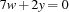
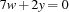
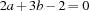
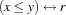
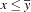

1.7 Advanced Topics
This section discusses issues of practical relevance not covered in this manual so far. It explains implementation techniques rather than giving ready-to-use code.
1.7.1 Detecting Equal Variables in a Vector
A feature of the finite domain constraint system of Oz is that it is able to exploit equality between variables. For example, one can simplify linear equations in case equal variables are detected. Let us regard the equation  . Imposing the equality constraints
. Imposing the equality constraints  and
and  allows to simplify the equation to . This simplification offers the advantage that the propagator becomes computationally less complex resulting in a better execution performance.
allows to simplify the equation to . This simplification offers the advantage that the propagator becomes computationally less complex resulting in a better execution performance.
The CPI provides the function
OZ_findEqualVars
int * OZ_findEqualVars(int sz, OZ_Term * v)
to detect equal variables in an OZ_Term array. It expects v to be an array with sz elements. Assume the application
int * pa = OZ_findEqualVars(arr_sz, x);
where pa is called the position array. The array x is scanned with ascending index starting from 0 to determine the values of pa. If x[i] denotes a variable and this variable occurs the first time, the value of pa[i] is i. In case the variable occurs not the first time, pa[i] contains the index of the first occurrence. If x[i] denotes an integer, pa[i] contains -1.
As an example, consider the constraint  where at runtime the constraint
where at runtime the constraint  is imposed. The result of the equal variable detection is as follows.
is imposed. The result of the equal variable detection is as follows.
| 0 | 1 | 2 | 3 | 4 |
| a | b | c | d | e |
| 0 | 1 | 2 | -1 | 2 |
The state of the propagator can now be updated to represent the equivalent constraint . Thus, this simplification avoids tedious handling of equal variables in the propagation algorithm and it improves memory consumption and runtime behaviour.
mayBeEqualVars
To avoid unnecessary calls of OZ_findEqualVars(), this function is intended to be used in conjunction with the member function mayBeEqualVars() of class OZ_Propagator (see also Section 1.3.3 of ``The Mozart Constraint Extensions Reference''). In case an equality constraint has been imposed on at least one variable occurring in the propagator's parameters, mayBeEqualVars() returns 1.
Note that the function OZ_findEqualVars() returns a pointer to a static array, i. e. another application of this function will override the previous values.
1.7.2 Avoiding Redundant Copying
In Section 1.5.2 we learned that data structures referenced by the state of a propagator have to be copied whenever the Oz runtime system calls either the member function gCollect() or sClone(). But constant data structures, i. e. data structures which do not change during the propagator's lifetime, need only to be duplicated in case of a garbage collection. Otherwise it is sufficient to have a reference to such a constant data structure. Thus it is useful to use a reference counting technique to keep track of the number of references to the constant data structure, so that the destructor of the propagator can dispose the data structure when there is no reference left.
That is one reason why there are distinct member functions for garbage collection and space cloning. Garbage collection requires a fresh copy of constant data structures while space cloning requires only a reference and a reference counting technique is applicable.
The code presented in this section defines the class ConstDataHdl which can be used to avoid redundant copying of constant data structures by approptiate actions in gCollect() and sClone(). The class ConstDataHdl implements a reference counting scheme and holds in its state, apart from the actual constant data structure, the reference counter _refCount and the forward reference _newLoc. In our example the constant data structure is the string "Constant data".
The constructor of ConstDataHdl creates the constant data structure and initialises the reference counting mechanism. The operator new is redefined to allocate instances of ConstDataHdl on the heap. The operator delete decrements the reference counter and deallocates the instance of ConstDataHdl from the heap if there is no reference left. The member function getRef() is to be used if a new reference to an instance of ConstDataHdl is needed (sClone()). It increments _refCount and returns the self-reference this. The member function copy() is to be used if the constant data structure has to be duplicated which is the case in gCollect().
class ConstDataHdl {
private:
char _constData[100];
int _refCount;
ConstDataHdl * _newLoc;
public:
ConstDataHdl(char * str)
: _refCount(1), _newLoc(NULL) {
strcpy(_constData, str);
}
static void * operator new (size_t sz) {
return OZ_hallocChars(sz);
}
static void operator delete (void * p) {
if (0 == --((ConstDataHdl *) p)->_refCount)
OZ_hfreeChars((char *) p,sizeof(ConstDataHdl));
}
ConstDataHdl * getRef(void) {
_refCount += 1;
return this;
}
ConstDataHdl * copy (void) {
if (_newLoc)
_newLoc->getRef();
else
_newLoc = new ConstDataHdl(_constData);
return _newLoc;
}
};
At its first invocation the member function copy() duplicates the instance it is called from, sets the forward reference newLoc to the location of the duplicate, and returns the reference to the duplicate. All subsequent invocations only increment the reference counter of the duplicate and return a reference to the duplicate.
To use the presented reference counting scheme in a propagator add to ...
- ... the class definition of the propagator:
ConstDataHdl * _constData;
- ... the constructor definition of the propagator:
_constData = new ConstDataHdl("Constant data");
- ... the destructor definition of the propagator:
delete _constData;
- ... the definition of the member function
gCollect(): _constData = _constData->copy();
- ... the definition of the member function
sClone()(): _constData = _constData->getRef();
The presented class definition of ConstDataHdl can be adopted by redefining the embedded data structure ConstDataHdl::_constData appropriately.
1.7.3 Reified Constraints
This section sketches the implementation of reified constraints (see the section on reified constraints in Chapter 8 of ``Finite Domain Constraint Programming in Oz. A Tutorial.'') and goes into more details concerning the particularities of the class OZ_FDIntVar.
The idea of reification is as follows: A  -variable R is associated with a constraint
-variable R is associated with a constraint  . The variable
. The variable  is called control variable. As long as the domain of is not constrained to a singleton domain, the constraint checks if the constraint store entails or disentails . If so, the variable is constrained to 1 or 0, respectively. Otherwise, if is constrained to 0 or 1 then the constraint or
is called control variable. As long as the domain of is not constrained to a singleton domain, the constraint checks if the constraint store entails or disentails . If so, the variable is constrained to 1 or 0, respectively. Otherwise, if is constrained to 0 or 1 then the constraint or  , respectively, is imposed to the store.
, respectively, is imposed to the store.
The implementation of a reified constraint is explained for , which will be implemented by the class ReifiedLessEqProp. We assume that the constraints  and
and  are implemented by the classes
are implemented by the classes LessEqProp resp.GreaterProp. This section focuses on implementing ReifiedLessEqProp::propagate().
There are basically two cases to be regarded. The first case is that the domain of the control variable is an integer. Then  has to be replaced either by or by . The technique to replace a propagator by another one is explained in Section 1.3.
has to be replaced either by or by . The technique to replace a propagator by another one is explained in Section 1.3.
Encapsulated Constraint Propagation
If the control variable is still a variable, the reified propagator checks if the constraint  is entailed resp. disentailed by the store. For this, the propagator has to perform a constraint propagation such that the propagation results are only locally visible inside the propagator and not written to the store. This is called encapsulated constraint propagation. Additionally, the reified propagator checks if the constraints produced by encapsulated propagation, so-called encapsulated constraints, are subsumed by the constraint store. If so the control variable is constrained to 1. If the encapsulated constraints are inconsistent, the control variable is constrained to 0. Otherwise the control variable is left untouched.
is entailed resp. disentailed by the store. For this, the propagator has to perform a constraint propagation such that the propagation results are only locally visible inside the propagator and not written to the store. This is called encapsulated constraint propagation. Additionally, the reified propagator checks if the constraints produced by encapsulated propagation, so-called encapsulated constraints, are subsumed by the constraint store. If so the control variable is constrained to 1. If the encapsulated constraints are inconsistent, the control variable is constrained to 0. Otherwise the control variable is left untouched.
The member function readEncap
Instances of class OZ_FDIntVar are usually initialised by the member function read() or the constructor OZ_FDIntVar(OZ_Term) with the intention to make amplified constraints visible to the store. To obtain an instance of OZ_FDIntVar() providing encapsulated constraint propagation, the function readEncap() has to be used instead. Such an instance is used in the same way as in the non-encapsulated case.
The code below implements member function propagate() of class ReifiedLessEq. It is implemented in such a way that it utilises encapsulated propagation 1.
OZ_Return ReifiedLessEqProp::propagate()
{
OZ_FDIntVar r(_r);
if(*r == fd_singl) {
r.leave();
return replaceBy((r->getSingleElem() == 1)
? new LessEqProp(_x, _y)
: new GreaterProp(_x, _y));
}
OZ_FDIntVar x, y;
x.readEncap(_x); y.readEncap(_y);
int r_val = 0;
// entailed by store?
if (x->getMaxElem() <= y->getMinElem()) {
r_val = 1;
goto quit;
}
if (0 == (*x <= y->getMaxElem())) goto quit;
if (0 == (*y >= x->getMinElem())) goto quit;
r.leave(); x.leave(); y.leave();
return OZ_SLEEP;
quit:
if(0 == (*r &= r_val)) {
r.fail(); x.fail(); y.fail();
return OZ_FAILED;
}
r.leave(); x.leave(); y.leave();
return OZ_ENTAILED;
}
The implementation checks first whether the control variable r denotes a singleton. If so, the reified propagator is replaced by an appropriate propagator depending on the value of r.
Otherwise the code proceeds with defining the variables x and y as instances of class OZ_FDIntVar. Initialisation of x and y with readEncap() ensures encapsulated constraint propagation. Next it is checked if is entailed by the store, which is the case if  is true 2. If so,
is true 2. If so, r_val is set to 1 and the code branches to label quit. Then the propagation rules are implemented. They are  and  . In case an inconsistency is detected, the code branches to label
. In case an inconsistency is detected, the code branches to label quit and the value of r_val is left at 0. Finally, the function propagate() returns OZ_SLEEP to the runtime system.
The code at label quit constrains r to the value of r_val and in case of an inconsistency it returns OZ_FAILED. Otherwise the propagator is left by returning OZ_ENTAILED.
 (
( ) denotes the smallest (largest) integer of the current domain of
) denotes the smallest (largest) integer of the current domain of